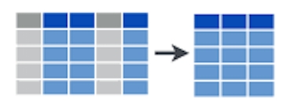
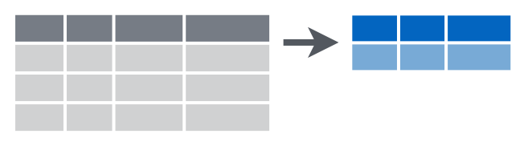

Data transformation (I): Create new variables, filter, select and organize data
Data transformation (I): Create new variables, filter, select and organize data
111022 | Data management and visualization with R
Introduction
The tidyverse is a set of packages created by Hadley Wickham, chief scientist at RStudio. The tidyverse was created to facilitate data analysis. It consists of packages for importing and reading data, for organizing and modifying data, for analysis and modeling, and for displaying results. In fact, there is a package for each of the main steps in the data analysis pipeline.

In this lab we are going to cover the very basics of data manipulation with dplyr, which focuses on data transformation, to start handling our datasets towards the desired analysis and/or visualization procedures.
Before we start, bear in mind that:
dplyr(nortidyrorpurrror any other package in thetidyverse) does not do anything that can’t be done with base R code,applyfamily functions,forloops or other packages.It is designed to be more efficient (in time consume and code lines), easier to read and easier to use. More intuitive to use, specially for beginners (it may require some adaptation if you are used to base R code).
It is Valid mostly for
data.frames. For other formats (matrices, arrays)plyrcan be used instead.
Our data
For the development of this lab we are going to use several data tables, that you fin in the RStudio Cloud project of this lab, within the data folder. Click on the data_IFN.rdatafile to open the
plots[11858 x 15]: contains all plots from the Third Spanish Forest Inventory (IFN3) in Cataloniatrees[111756 x 12]: all trees with dbh > 7.5 cm measured in both the second and the third forest inventory (IFN2 and IFN3)species[14778 x 15]: number of trees per hectare in each plot, per species and size classcoordinates[11858 x 6]: X and Y UTM coordinates of each plot.leaf[10447 x 3]: leaf biomass and carbon content for those IFN3 plots where they were available .
Let’s have a look at the data
## # A tibble: 11,858 x 17
## Codi Provincia Cla Subclase FccTot FccArb FechaIni HoraIni
## <fct> <fct> <fct> <fct> <int> <int> <date> <dttm>
## 1 0800~ 08 A 1 80 70 2001-07-09 2017-11-26 09:44:00
## 2 0800~ 08 A 1 80 70 2001-08-06 2017-11-26 09:18:58
## 3 0800~ 08 A 1 90 80 2001-08-06 2017-11-26 12:08:09
## 4 0800~ 08 A 1 90 50 2001-07-09 2017-11-26 13:23:23
## 5 0800~ 08 A 1 70 60 2001-08-03 2017-11-26 09:11:28
## 6 0800~ 08 A 1 90 90 2001-08-01 2017-11-26 13:00:33
## 7 0800~ 08 A 1 90 90 2001-08-07 2017-11-26 10:08:15
## 8 0800~ 08 A 1 70 60 2001-08-03 2017-11-26 12:12:03
## 9 0800~ 08 A 1 80 70 2001-08-02 2017-11-26 09:00:16
## 10 0800~ 08 A 1 80 80 2001-06-14 2017-11-26 12:34:21
## # ... with 11,848 more rows, and 9 more variables: FechaFin <date>,
## # HoraFin <dttm>, Rocosid <int>, Textura <int>, MatOrg <int>, PhSuelo <int>,
## # FechaPh <date>, Dom_sp2 <fct>, Dom_sp3 <fct>## # A tibble: 111,756 x 10
## Codi Provincia Especie Rumbo Dist N CD DiamIf3 DiamIf2 HeiIf3
## <fct> <chr> <fct> <dbl> <dbl> <dbl> <dbl> <dbl> <dbl> <dbl>
## 1 080001 08 022 7 8.3 31.8 20 20.3 18.9 9
## 2 080002 08 476 38 9.1 31.8 35 34 32.4 9
## 3 080003 08 021 25 7 31.8 25 24.8 17.6 11
## 4 080004 08 021 28 8.89 31.8 15 16.8 12.6 9.5
## 5 080006 08 021 19 11.2 14.1 35 34.0 30.9 13
## 6 080007 08 021 32 12 14.1 35 33.1 28.2 10
## 7 080008 08 243 40 7.8 31.8 15 15 13.2 6
## 8 080009 08 045 16 5.09 31.8 20 17.5 15.3 7
## 9 080010 08 243 47 26.9 5.09 65 67.4 66.8 16.5
## 10 080013 08 022 44 2.7 127. 15 15.1 12.6 9.5
## # ... with 111,746 more rows## # A tibble: 14,778 x 15
## Codi Especie CD_10 CD_15 CD_20 CD_25 CD_30 CD_35 CD_40 CD_45 CD_50 CD_55
## <fct> <fct> <dbl> <dbl> <dbl> <dbl> <dbl> <dbl> <dbl> <dbl> <dbl> <dbl>
## 1 0800~ 022 0 159. 31.8 111. 60.1 19.2 5.09 0 0 0
## 2 0800~ 021 0 0 0 0 0 74.2 28.3 63.7 0 0
## 3 0800~ 022 0 0 0 173. 31.8 0 0 0 0 0
## 4 0800~ 476 0 0 0 0 0 31.8 0 0 0 0
## 5 0800~ 021 0 0 0 31.8 0 0 0 0 5.09 0
## 6 0800~ 022 0 127. 0 0 46.0 127. 0 14.1 0 0
## 7 0800~ 021 0 31.8 0 0 31.8 0 0 0 0 0
## 8 0800~ 071 0 0 0 14.1 5.09 31.8 0 0 0 0
## 9 0800~ 243 0 0 14.1 0 14.1 0 5.09 0 0 0
## 10 0800~ 278 0 286. 31.8 0 0 31.8 0 0 0 0
## # ... with 14,768 more rows, and 3 more variables: CD_60 <dbl>, CD_65 <dbl>,
## # CD_70 <dbl>## # A tibble: 11,766 x 6
## Codi Provincia Estadillo Cla CoorX CoorY
## <fct> <chr> <chr> <fct> <int> <int>
## 1 080001 08 0001 A 402000 4684000
## 2 080002 08 0002 A 400000 4683000
## 3 080003 08 0003 A 401000 4683000
## 4 080004 08 0004 A 402000 4683000
## 5 080005 08 0005 A 400000 4682000
## 6 080006 08 0006 A 397000 4681000
## 7 080007 08 0007 A 399000 4681000
## 8 080008 08 0008 A 401000 4681000
## 9 080009 08 0009 A 402000 4681000
## 10 080010 08 0010 A 394000 4680000
## # ... with 11,756 more rows## # A tibble: 10,447 x 3
## Codi leaf_biomass leaf_carbon
## <chr> <dbl> <dbl>
## 1 080001 4.99 2.58
## 2 080002 2.39 1.23
## 3 080003 2.97 1.53
## 4 080004 0.395 0.200
## 5 080005 1.34 0.644
## 6 080006 4.03 2.07
## 7 080007 5.97 3.04
## 8 080008 0.928 0.452
## 9 080009 3.85 1.94
## 10 080010 1.54 0.758
## # ... with 10,437 more rowsMaybe you have noticed that, when printing the datasets, R says they are a tibble. So, what are tibbles?. Well, tibbles are not usual data.frames, though they are a very similar data structures. The main difference is that tibbles facilitate data inspection and, thus, understanding by:
Printing only the first 10 rows by default (equal to
head(x, n =10)).Informing about variable types by default (
str(x)).
Besides that, it is like a data.frame (it is a data.frame). In fact if we see the class of our datasets, we see they ARE dataframes
## [1] "tbl_df" "tbl" "data.frame"Data inspection must be the first thing we do before starting any kind of analysis. Understanding data is crucial to succeed. The glimpse function is perhaps the most informative way to know what our data looks like at a glance:
## Rows: 111,756
## Columns: 10
## $ Codi <fct> 080001, 080002, 080003, 080004, 080006, 080007, 080008, 0...
## $ Provincia <chr> "08", "08", "08", "08", "08", "08", "08", "08", "08", "08...
## $ Especie <fct> 022, 476, 021, 021, 021, 021, 243, 045, 243, 022, 021, 02...
## $ Rumbo <dbl> 7, 38, 25, 28, 19, 32, 40, 16, 47, 44, 13, 9, 9, 25, 199,...
## $ Dist <dbl> 8.3, 9.1, 7.0, 8.9, 11.2, 12.0, 7.8, 5.1, 26.9, 2.7, 8.9,...
## $ N <dbl> 31.8, 31.8, 31.8, 31.8, 14.1, 14.1, 31.8, 31.8, 5.1, 127....
## $ CD <dbl> 20, 35, 25, 15, 35, 35, 15, 20, 65, 15, 20, 30, 45, 20, 3...
## $ DiamIf3 <dbl> 20, 34, 25, 17, 34, 33, 15, 18, 67, 15, 19, 28, 46, 20, 3...
## $ DiamIf2 <dbl> 19, 32, 18, 13, 31, 28, 13, 15, 67, 13, 14, 25, 45, 20, 3...
## $ HeiIf3 <dbl> 9.0, 9.0, 11.0, 9.5, 13.0, 10.0, 6.0, 7.0, 16.5, 9.5, 11....Nonetheless, we can just invoke the objects to check them, as we did previously:
## # A tibble: 111,756 x 10
## Codi Provincia Especie Rumbo Dist N CD DiamIf3 DiamIf2 HeiIf3
## <fct> <chr> <fct> <dbl> <dbl> <dbl> <dbl> <dbl> <dbl> <dbl>
## 1 080001 08 022 7 8.3 31.8 20 20.3 18.9 9
## 2 080002 08 476 38 9.1 31.8 35 34 32.4 9
## 3 080003 08 021 25 7 31.8 25 24.8 17.6 11
## 4 080004 08 021 28 8.89 31.8 15 16.8 12.6 9.5
## 5 080006 08 021 19 11.2 14.1 35 34.0 30.9 13
## 6 080007 08 021 32 12 14.1 35 33.1 28.2 10
## 7 080008 08 243 40 7.8 31.8 15 15 13.2 6
## 8 080009 08 045 16 5.09 31.8 20 17.5 15.3 7
## 9 080010 08 243 47 26.9 5.09 65 67.4 66.8 16.5
## 10 080013 08 022 44 2.7 127. 15 15.1 12.6 9.5
## # ... with 111,746 more rowsA more in depth view on the datasets we will use
In this lab we are going to use mostly the datasets trees and plots. Let’s explain the variables they contain:
PLOTS
This dataframe contains information on the plots measured in the National Forest Inventory
- Codi (factor): the code of the permanent plot.
- Provincia (character): the province in which the plot is located. For Catalonia the codes are:
- Barcelona: “08”
- Girona: “17”
- Lleida: “25”
- Tarragona “43”
- Cla (factor): type of plot, depending if it was measured in IFN2 or not
- Subclase (factor): type of plot, depending if it was measured in IFN2 or not
- FccTot (integer): canopy cover in the plot
- FccArb (integer): tree canopy cover in the plot
- FechaIni (date): date at which the plot was started to measure
- HoraIni (datetime): date and time at which the plot was started to measure
- FechaFin (date): date at which the plot was finished to measure
- HoraFin (datetime): time at which the plot was finished to measure
- Rocosid (integer): proportion of rocks in surface of the plot
- Textura (integer): soil texture
- MatOrg (integer): amount of organic matter in the plot
- PhSuelo (integer): pH of the soil in the plot
- FechaPh (date): date at which pH was measured
** TREES**
- Codi (factor): the code of the permanent plot.
- Provincia (character): the province in which the plot is located.
- Especie (factor): the specific identity of the tree, as a code. You can find the meaning of each code here (pages 24-28)
- Rumbo: the angle from the center of the plot to the tree, measured in centesimal degrees (so takes values from 0 to 400)
- Dist: the distance from the center of the plot to the tree, in meters
- N: number of trees per hectare that this tree represents
- CD: diameter class, in centimeters and grouped in 5 cm classes
- DiamIf3: tree diameter, in centimeters, as measured in IFN3
- DiamIf2: tree diameter, in centimeters, as measured in IFN2
- HeiIf3: tree height, in meters, as measured in IFN3.
 Data transformation with dplyr
Data transformation with dplyr
dplyr is a essentially a grammar for data manipulation, providing a consistent set of verbs that help you solve the most common data manipulation challenges.
The 5 main verbs of dplyr
filter: keep/select the rows that match a given conditionselect: keep columns by namearrange: sort rows acording to a given variablemutate: transform existent variables or create new onessummarise: do some summary statistics and reduce data
These is a very small subset of what dplyr can do. Just a quick check into its cheatsheet reveals a wide range of possibilities:

Most of the tidyverse verbs/functions share certain elements in common and dplyr is certainly not an exception. The basic sintax works like this:
- First argument: data (as
data.frameortbl_df). - The rest of arguments specify what to do with the data, and depend on the specific verb.
- Output is always another data frame (
tbl_dfordata.frame). - Unless we are assigning (
<-) the result into an object, functions never modify the original data.
Selecting rows with filter
Use filter() to choose rows/cases/observations where a given condition(s) is TRUE. The first argument in filteris the dataframe we want it to apply to, and the rest are the criteria for the filtering. If there are several criteria, they can be separated by commas:

Let’s see a few basic examples applied to the trees table:
- Get trees taller than 6 meters:
## # A tibble: 100,247 x 10
## Codi Provincia Especie Rumbo Dist N CD DiamIf3 DiamIf2 HeiIf3
## <fct> <chr> <fct> <dbl> <dbl> <dbl> <dbl> <dbl> <dbl> <dbl>
## 1 080001 08 022 7 8.3 31.8 20 20.3 18.9 9
## 2 080002 08 476 38 9.1 31.8 35 34 32.4 9
## 3 080003 08 021 25 7 31.8 25 24.8 17.6 11
## 4 080004 08 021 28 8.89 31.8 15 16.8 12.6 9.5
## 5 080006 08 021 19 11.2 14.1 35 34.0 30.9 13
## 6 080007 08 021 32 12 14.1 35 33.1 28.2 10
## 7 080009 08 045 16 5.09 31.8 20 17.5 15.3 7
## 8 080010 08 243 47 26.9 5.09 65 67.4 66.8 16.5
## 9 080013 08 022 44 2.7 127. 15 15.1 12.6 9.5
## 10 080014 08 021 13 8.89 31.8 20 19.2 14.2 11.5
## # ... with 100,237 more rows- Get trees in Tarragona (province 43):
## # A tibble: 9,693 x 10
## Codi Provincia Especie Rumbo Dist N CD DiamIf3 DiamIf2 HeiIf3
## <fct> <chr> <fct> <dbl> <dbl> <dbl> <dbl> <dbl> <dbl> <dbl>
## 1 430003 43 024 6 9.69 31.8 30 28.1 20.4 10.5
## 2 430006 43 023 24 9.69 31.8 30 28.2 23.2 10.5
## 3 430007 43 024 0 8.8 31.8 30 30.4 27.8 10.5
## 4 430009 43 024 15 9.89 31.8 30 30.4 30.4 11
## 5 430010 43 024 33 12.1 14.1 45 47.2 42.0 13.5
## 6 430011 43 044 1 2.09 127. 10 11.0 9.65 6
## 7 430012 43 024 31 13 14.1 35 33.0 26.5 12.5
## 8 430013 43 024 80 1.89 127. 40 38.4 35.7 11
## 9 430014 43 025 4 4.3 127. 15 14.0 11.2 5
## 10 430015 43 024 22 11.2 14.1 30 31.2 27.4 9
## # ... with 9,683 more rows- Get trees in diametric classes 45 and 70:
## # A tibble: 2,552 x 10
## Codi Provincia Especie Rumbo Dist N CD DiamIf3 DiamIf2 HeiIf3
## <fct> <chr> <fct> <dbl> <dbl> <dbl> <dbl> <dbl> <dbl> <dbl>
## 1 080016 08 071 9 26.9 5.09 45 46.0 45 19
## 2 080113 08 021 19 11.1 14.1 70 72.6 70.7 20.9
## 3 080686 08 042 43 7.09 31.8 45 44.3 42.5 12.5
## 4 080721 08 042 16 15.8 5.09 45 46.2 39.8 17.5
## 5 080743 08 042 3 9.69 31.8 45 46.1 40.7 25.5
## 6 081271 08 024 93 10.8 14.1 45 44.0 39.0 17.3
## 7 081278 08 024 87 10.1 14.1 45 44.6 38.9 15.1
## 8 081354 08 026 16 8.6 31.8 45 43.4 30.8 16.9
## 9 081402 08 054 51 5.19 31.8 70 102. 95.5 17.7
## 10 081943 08 024 1 10.3 14.1 45 43.2 33.8 11.7
## # ... with 2,542 more rowsThe key aspect of
filterlies on building the condition that must be met. Doing so involves the use oflogical operators:

EXERCISE 1:
Let’s find those plots in IFN3n (plots data frame) that:
1.1 Are located either in Barcelona (08) or Girona (17)
# Change the filter to select February rather than Januaryfilter(plots, Provincia == "08" | Provincia == "17")1.2 Were measured in January 2001
1.3 It took more than 2 hours to measure (7200s) Hint: we can include an arithmetic operation between two variables within a filter function
Selecting columns with select
Select is the function in dplyr to choose variables (i.e., columns) from a tibble or data.frame. It keeps only the variables you mention, but even if we only select one variable, the output is still a data frame. To extract a given columns as a vector we can use the function pull().

Let’s see some examples:
- Selecting a single column/variable:
## # A tibble: 111,756 x 1
## DiamIf3
## <dbl>
## 1 20.3
## 2 34
## 3 24.8
## 4 16.8
## 5 34.0
## 6 33.1
## 7 15
## 8 17.5
## 9 67.4
## 10 15.1
## # ... with 111,746 more rowsSelecting all columns but the targeted one. The - operator excludes the targeted variable so that we only keep the remaining variables:
## # A tibble: 111,756 x 9
## Provincia Especie Rumbo Dist N CD DiamIf3 DiamIf2 HeiIf3
## <chr> <fct> <dbl> <dbl> <dbl> <dbl> <dbl> <dbl> <dbl>
## 1 08 022 7 8.3 31.8 20 20.3 18.9 9
## 2 08 476 38 9.1 31.8 35 34 32.4 9
## 3 08 021 25 7 31.8 25 24.8 17.6 11
## 4 08 021 28 8.89 31.8 15 16.8 12.6 9.5
## 5 08 021 19 11.2 14.1 35 34.0 30.9 13
## 6 08 021 32 12 14.1 35 33.1 28.2 10
## 7 08 243 40 7.8 31.8 15 15 13.2 6
## 8 08 045 16 5.09 31.8 20 17.5 15.3 7
## 9 08 243 47 26.9 5.09 65 67.4 66.8 16.5
## 10 08 022 44 2.7 127. 15 15.1 12.6 9.5
## # ... with 111,746 more rows- To select several columns:
## # A tibble: 111,756 x 2
## DiamIf2 DiamIf3
## <dbl> <dbl>
## 1 18.9 20.3
## 2 32.4 34
## 3 17.6 24.8
## 4 12.6 16.8
## 5 30.9 34.0
## 6 28.2 33.1
## 7 13.2 15
## 8 15.3 17.5
## 9 66.8 67.4
## 10 12.6 15.1
## # ... with 111,746 more rows- Selecting a range of columns. The
:operator allows referencing a set of contiguous columns so that all variables contained in that range will be included:
## # A tibble: 111,756 x 5
## Codi Provincia Especie Rumbo Dist
## <fct> <chr> <fct> <dbl> <dbl>
## 1 080001 08 022 7 8.3
## 2 080002 08 476 38 9.1
## 3 080003 08 021 25 7
## 4 080004 08 021 28 8.89
## 5 080006 08 021 19 11.2
## 6 080007 08 021 32 12
## 7 080008 08 243 40 7.8
## 8 080009 08 045 16 5.09
## 9 080010 08 243 47 26.9
## 10 080013 08 022 44 2.7
## # ... with 111,746 more rowsWe can combine
-and:to exclude a range of columns, though we must use avectorto specify the range using parenthesis:
## # A tibble: 111,756 x 5
## N CD DiamIf3 DiamIf2 HeiIf3
## <dbl> <dbl> <dbl> <dbl> <dbl>
## 1 31.8 20 20.3 18.9 9
## 2 31.8 35 34 32.4 9
## 3 31.8 25 24.8 17.6 11
## 4 31.8 15 16.8 12.6 9.5
## 5 14.1 35 34.0 30.9 13
## 6 14.1 35 33.1 28.2 10
## 7 31.8 15 15 13.2 6
## 8 31.8 20 17.5 15.3 7
## 9 5.09 65 67.4 66.8 16.5
## 10 127. 15 15.1 12.6 9.5
## # ... with 111,746 more rowsWe can leverage some special functions especifically design to work withwith strings to enhance column extraction:
starts_with(x): names that start with x.ends_with(x): names that end with x.contains(x): selects all variables whose name contains x.matches(x): selects all variables whose name contains the regular expression x.num_range("x", 1:5, width = 2): selects all variables (numerically) from x01 to x05one_of ("x", "y", "z"): selects variables provided in a character vector.
We can check the list of special functions with help(select).
- Select columns that start with the string
Diam:
## # A tibble: 111,756 x 2
## DiamIf3 DiamIf2
## <dbl> <dbl>
## 1 20.3 18.9
## 2 34 32.4
## 3 24.8 17.6
## 4 16.8 12.6
## 5 34.0 30.9
## 6 33.1 28.2
## 7 15 13.2
## 8 17.5 15.3
## 9 67.4 66.8
## 10 15.1 12.6
## # ... with 111,746 more rowsEXERCISE 2
Think of three or four ways to select the variables that define the start and finish date of plot measuring.
Sorting rows with arrange
arrange allows sorting a data frame according to the values of a guiding variable. arrange sorts the database based on one or more variables. The first argument will be, as always, the data frame that we want to re-sort, and then we specify the variables that determine the sorting order. If we specify more than 1 variable, the successive variables will serve to break the ties of the previous ones. Y Sorting can be done in either ascending or descending order, both with numerical (increase or decrease) or alphanumerical (alphabetical order) variables.
As we will see in further sections, sorting data may significantly help in the process of data visualization, and can also be an easy way to inspect the range of data of a particular variable.
 Let’s see a fe examples:
Let’s see a fe examples:
- Sort trees ascending by height in the third forest inventory:
## # A tibble: 111,756 x 10
## Codi Provincia Especie Rumbo Dist N CD DiamIf3 DiamIf2 HeiIf3
## <fct> <chr> <fct> <dbl> <dbl> <dbl> <dbl> <dbl> <dbl> <dbl>
## 1 171919 17 045 72 4.5 127. 10 10.2 10.4 1.5
## 2 171806 17 046 138 4.5 127. 10 11.9 9.95 1.5
## 3 171049 17 045 331 3.29 127. 10 7.65 7.65 1.5
## 4 080073 08 071 269 3.9 127. 10 10.4 9.2 1.6
## 5 082415 08 045 9 4.69 127. 10 9.7 9.7 1.79
## 6 082451 08 044 33 1 127. 10 7.9 8.1 2
## 7 171959 17 068 17 3.29 127. 10 9.95 8.4 2
## 8 250494 25 042 29 3.09 127. 10 8.45 8.45 2
## 9 251649 25 022 5 5.5 31.8 15 14 14 2
## 10 080664 08 042 49 4.19 127. 10 8.45 8.3 2
## # ... with 111,746 more rows- Sort them descending:
## # A tibble: 111,756 x 10
## Codi Provincia Especie Rumbo Dist N CD DiamIf3 DiamIf2 HeiIf3
## <fct> <chr> <fct> <dbl> <dbl> <dbl> <dbl> <dbl> <dbl> <dbl>
## 1 250008 25 042 398 36.5 5.09 70 74.8 72.3 11.1
## 2 250025 25 031 350 34.8 5.09 70 75.1 71.3 35.7
## 3 250135 25 022 158 33.9 5.09 50 51.8 54.0 9
## 4 250051 25 021 110 33.6 5.09 60 58.2 56.8 6.5
## 5 250025 25 031 238 33.5 5.09 50 51 45.5 20.3
## 6 250010 25 071 214 32.9 5.09 70 85.3 71.6 21
## 7 251788 25 045 163 32.8 5.09 60 61.6 51.7 10.5
## 8 250039 25 031 119 32.5 5.09 65 63.5 62.6 30
## 9 250025 25 031 390 32.1 5.09 45 45.6 43.8 24.6
## 10 171289 17 071 38 31.4 5.09 60 60.8 50.4 26.9
## # ... with 111,746 more rowsEXERCISE 3
3.1 Sort plots by date and hour of measurement
3.2 Which plots were started to be measured later in the day?
3.3 Which plots took longer to be measured? Hint: as we did with filter, we can also sort a data frame based on the result of an aithmetic operation between two variables.
Create new variables with mutate
mutate() allows to create/calculate new columns/variables in our dataset. It is perhaps one of the most used functions given its ability to either create or update variables in a given tibble or data.frame. We just need to specify the dataframe where we want to crate the variable, and its value:

The basic syntax of mutate allows to especify the name of variable (variable_name = data_operation) and then the operation by which we assign information to it.
If the name of the variable already exists, then that variable is replaced and updated with the new values. Otherwise, we will create a new variable. Nonetheless, it would be actually replaced unless we use
<-to store the result into an object. If we want toc hange the name of a variable without changing its values, we can use the verbrename, also available indplyr.
Let’s see some examples:
- Replace
Distwith its old value times 100:
## # A tibble: 111,756 x 10
## Codi Provincia Especie Rumbo Dist N CD DiamIf3 DiamIf2 HeiIf3
## <fct> <chr> <fct> <dbl> <dbl> <dbl> <dbl> <dbl> <dbl> <dbl>
## 1 080001 08 022 7 830. 31.8 20 20.3 18.9 9
## 2 080002 08 476 38 910 31.8 35 34 32.4 9
## 3 080003 08 021 25 700 31.8 25 24.8 17.6 11
## 4 080004 08 021 28 889 31.8 15 16.8 12.6 9.5
## 5 080006 08 021 19 1119 14.1 35 34.0 30.9 13
## 6 080007 08 021 32 1200 14.1 35 33.1 28.2 10
## 7 080008 08 243 40 780 31.8 15 15 13.2 6
## 8 080009 08 045 16 509 31.8 20 17.5 15.3 7
## 9 080010 08 243 47 2689 5.09 65 67.4 66.8 16.5
## 10 080013 08 022 44 270 127. 15 15.1 12.6 9.5
## # ... with 111,746 more rowsNote that several operations can be conducted at once just by separating many operations using
,:
## # A tibble: 111,756 x 12
## Codi Provincia Especie Rumbo Dist N CD DiamIf3 DiamIf2 HeiIf3
## <fct> <chr> <fct> <dbl> <dbl> <dbl> <dbl> <dbl> <dbl> <dbl>
## 1 0800~ 08 022 7 8.3 31.8 20 20.3 18.9 9
## 2 0800~ 08 476 38 9.1 31.8 35 34 32.4 9
## 3 0800~ 08 021 25 7 31.8 25 24.8 17.6 11
## 4 0800~ 08 021 28 8.89 31.8 15 16.8 12.6 9.5
## 5 0800~ 08 021 19 11.2 14.1 35 34.0 30.9 13
## 6 0800~ 08 021 32 12 14.1 35 33.1 28.2 10
## 7 0800~ 08 243 40 7.8 31.8 15 15 13.2 6
## 8 0800~ 08 045 16 5.09 31.8 20 17.5 15.3 7
## 9 0800~ 08 243 47 26.9 5.09 65 67.4 66.8 16.5
## 10 0800~ 08 022 44 2.7 127. 15 15.1 12.6 9.5
## # ... with 111,746 more rows, and 2 more variables: Allometry <dbl>,
## # Allometry2 <dbl>We can even create a variable based on a variable we just created, and that did not exist in the original data frame (e.g. Allometry2 is based on Allometry)
EXERCISE 4
4.1 Get diameter growth (in cm) of each tree between IFN2 (DiamIf2) and IFN3 (DiamIf3)
4.2 Create two new variables with basal area of each tree (in \(m^2\) per hectare), both for IFN2 and IFN3. Which is the species of the fastest-growing tree in basal area? Hint: to solve this exercise you need to combine mutatewith on of the other verbs we’ve just covered.
\[ AB = \frac{\pi}{4} · Diam^{2} · N \]
Reducing variables: summarise or summarize
Data manipulation means different things to different researchers. Sometimes we want to select certain observations (rows) or variables (columns), other times we want to group the data according to one or more variables, or we want to calculate statistical values from according to a grouping or category scheme.
summarise allows us to make calculations with the variables in the data frame, but using summary functions, i.e. functions that transform the variability in a given variable into a single value. Functions such as sum, mean, max,IQR, etc. are examples of summary functions.
 We can leverage common statistical/summary functions to summarize numerical variables:
Range indicators:
min(x),max(x),quantile(x, p)Central measures:
mean(x),median(x),Dispersion measures:
sd(x),var(x),IQR(x)Counts:
n(),n_distinct(x)Conditional statistics:
sum(x > 10),mean(x > 10)
- Let’s get the mean diameter of all trees in the dataset
## # A tibble: 1 x 1
## mean_d
## <dbl>
## 1 23.4- Actually, the
meanmeans nothing without the standard deviation. Fortunately, we can concatenate summaries just using,to implement additional summaries:
## # A tibble: 1 x 2
## mean_if3 sd_if3
## <dbl> <dbl>
## 1 23.4 10.3Grouped summaries: group_by
The summary of a variable is important to have an idea about the data. However, summarizing a variable by group gives better information on the distribution of the data. In fact, one of the most common ways in which we create summaries is by grouping on the basis of certain information. That means, we split observations between a number of groups and the calculate the summary statistics for each of them. This is why summarise is most often used in conjunction with group_by, which classifies the data frame into groups based on a categorical variable.

In the case of our database, there are several groups that could be of interest:
# Per province
by_province <- group_by (trees, Provincia)
# Per plot
by_plot <- group_by (trees, Codi)
# Per species
by_species <- group_by (trees, Especie)
# per diameter class
by_CD <- group_by (trees, CD)
# Per plot and species
by_plot_species <- group_by (trees, Codi, Especie)You can see, by typing for example glimpse(by_plot) that the resulting data frame does not differ at all from the original, apparently, but has a hidden index that identifies to which class belongs each observation. Moreover, it has now the class grouped_df, that indicates this is a grouped table.
- Now we can apply
summariseto get an aggregation value per group category. In this case we will calculate the mean and maximum height per tree species:
summarise(
by_species,
mean_height_ifn3 = mean(HeiIf3, na.rm = TRUE),
max_height_ifn3 = max(HeiIf3, na.rm = TRUE)
)## `summarise()` ungrouping output (override with `.groups` argument)## # A tibble: 91 x 3
## Especie mean_height_ifn3 max_height_ifn3
## <fct> <dbl> <dbl>
## 1 004 5.4 5.8
## 2 008 6.27 10
## 3 012 6.78 10
## 4 013 9.61 17.2
## 5 014 7.45 8
## 6 015 7 9
## 7 016 7.72 12
## 8 017 19.8 28
## 9 019 7.13 17.3
## 10 021 12.6 28.5
## # ... with 81 more rowsEXERCISE 5
What statistics could we calculate to characterize the diameter values of the trees for each plot? Let’s try to calculate the mean, minimum and maximum values, the 90th percentile and the interquartile range for each plot (remember, you can and SHOULD look for help to know how to calculaye these values). We will also compute the number of trees measured per plot and the number of different species, using respectively the functions n() and n_distinct(x). We should see that the resulting output has fewer rows, namely one per plot (one per each grouping class), and that it only contains the newly created variables.